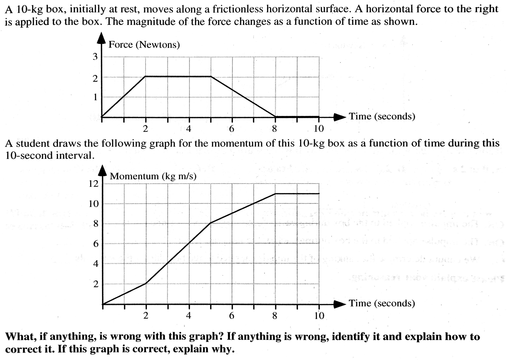

layout: true <div class="my-header"><img src="../figures/scsdLogo.png" style="height: 70px;"/></div> --- class: center, middle .title[AP Exam Review] .subtitle[*Momentum*] .author[üë®ü誂Äçüè´ Nathan Porter] .institution[üè´ Maple Hill High School] .coauthor[] .institution[] .date[üìÖ 2019-2020] .center[] <!--.footnote[Created with [{Remark.js}](http://remarkjs.com/) using [{Markdown}](https://daringfireball.net/projects/markdown/) + [{MathJax}](https://www.mathjax.org/)]--> --- class:photoback background-image: url("https://media.giphy.com/media/l0HlHFRbmaZtBRhXG/source.gif") #Welcome Questions --- #Momentum - Momentum is equal to mass times velocity: `\(p = mv\)` -- - The standard units of momentum are newton∙seconds, abbreviated N∙s. -- - The direction of an object‚Äôs momentum is always the same as its direction of motion. --- #Impulse: - Impulse, J, can be calculated in either of two ways: -- 1. Impulse is equal to the change in an object‚Äôs momentum -- 2. Impulse is equal to the force experienced multiplied by the time interval of collision, `\(J = F\Delta t = \Delta p\)` -- - Impulse has the same units as momentum, N∙s. -- - Impulse is the area under a force vs. time graph. --- #Impulse .center[<img src="https://openstax.org/resources/3d50064b2e47b02d763a76db833d520e5d045aef" width = "600"/>] --- #Conservation of momentum in collisions - When no external forces act on a system of objects, the system‚Äôs momentum can not change. -- - The total momentum of two objects before a collision is equal to the objects‚Äô total momentum after the collision. -- - Momentum is a vector: that is, total momentum of two objects moving in the same direction adds together; total momentum of two objects moving in opposite directions subtracts. -- - A system‚Äôs center of mass obeys Newton‚Äôs second law: that is, the velocity of the center of mass only changes when an external net force acts on the system. -- - In collisions between two bodies, N3L states the forces on each body must be equal and opposite. The impulse and momentum therefore must also be equal and opposite (Whatever momentum one object gains, the other loses). The momentum of the system is conserved. --- # Collisions The elasticity of a collision depends on how much kinetic energy is conserved. -- - Perfectly elastic: All KE is conserved. Objects bounce off without deforming. -- - General inelastic: Some KE is lost. Objects bounce off. -- - Perfectly inelastic: Max possible (but not all) KE is lost. Objects stick together. -- - Momentum and energy in total should be conserved in all collisions with appropriate systems. --- #Angular Momentum - Before calculating angular momentum, it is necessary to define a rotational axis. -- - The angular momentum `\(L\)` of an object is given by: -- - `\(I \omega \)` for an extended object -- - `\(mvr\)` for a point object, where `\(r\)` is the ‚Äúdistance of closest approach‚Äù -- - The ‚Äúdirection‚Äù of angular momentum is given by the right-hand rule. -- --- #Conservation of angular momentum: - When no torques act external to a system, angular momentum of the system cannot change. -- - Angular momentum is a vector ‚Äì angular momentums in the same sense add, angular momentums in opposite senses subtract. -- - Angular momentum is conserved separately from linear momentum. Do not combine them in a single equation. --- #Conservation of angular momentum: - Conservation of Angular Momentum is used when a translating object interacts with a rotating one. - Examples: Throwing a ball from a merry-go-round, bat hitting a baseball. -- - Conservation of Angular Momentum is also used for a single rotating object changing shape. - Example: A figure skater pulls in her arms. Moment of inertia decreases so angular velocity must increase to keep angular momentum constant. --- class:center, middle #To Repeat: Angular and Linear Momentum are conserved <u>*separately*</u>! --- #Impulse - The impulse-momentum theorem can be written for angular momentum, too. -- - `\(\tau \Delta t = \Delta L\)` -- - A change in angular momentum equals the net torque multiplied by the time the torque is applied. --- class: center, middle #Classic Questions --- class:center, middle  --- In Case A, a metal bullet penetrates a wooden block. In Case B, a rubber bullet with the same initial speed and mass bounces off an identical wooden block. .center[] **Will the speed of the wooden block after the collision be *greater in Case A*, *greater in Case B*, or *the same in both cases*?** Explain. --- A bullet of mass `\(m\)` is shot at a hinged rod near the end of the rod. The rod was initially at rest and has a moment of inertia `\(I\)` about an axis through its hinge. The bullet is fired at various angles `\(\theta\)` to the rod, as shown in the top view below, with an initial velocity `\(v\)` a distance `\(d\)` from the hinge. .center[] **Rank the magnitude of the angular momentum of these bullets about the hinge of the rod from greatest to least.**